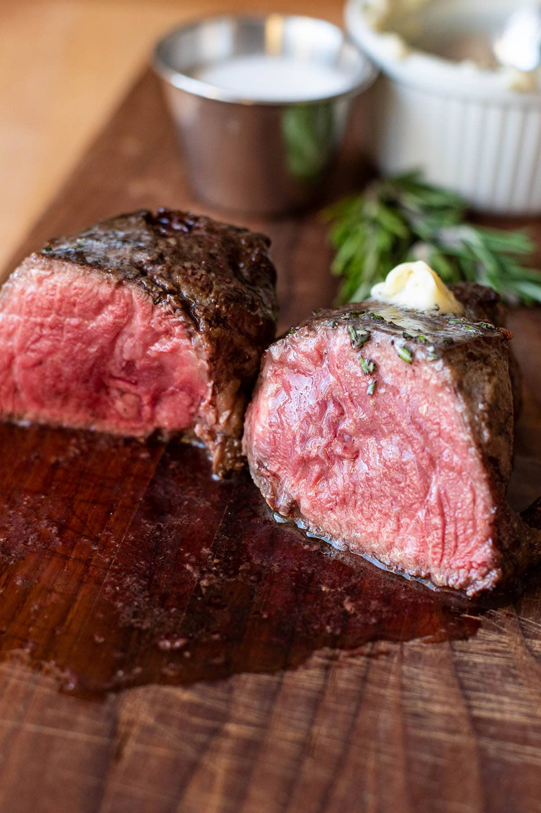

Filet Mignon

A juicy and tender steak with a perfect crust on the outside!
Find the original recipe here!
Ingredients
- 4 10-oz tenderloin beef filets (roughly 1 1/2 to 2 in. thick)
- Salt and pepper to taste
- Vegetable oil
- For garlic & herb butter:
- 1/2 stick of butter, softened
- 1 tbsp chopped fresh rosemary
- 1 tbsp chopped fresh tarragon
- 1/2 tbsp minced garlic
Directions
Make the Herb Butter
- Leave the butter on the counter to soften or place it in a microwave-safe bowl and microwave until malleable, 10-15 seconds.
- Use a fork to mash in the herbs and garlic until fully mixed.
- Store in the refrigerator and remove 10 minutes before adding to the filet.
Cook the Filets
- Preheat the oven to 415°F. Remove the steak from the fridge 30 minutes prior to cooking, this is to bring the steak to room temperature and ensure your cooking times are more accurate. Season all sides liberally with salt and pepper. This can be done while your steak comes to room temp.
- Add 1-2 tablespoons of oil to an oven-safe cast iron skillet and turn the heat up high, allowing the skillet to become very hot. Twirl the pan to distribute oil as it heats. Once the oil starts to smoke, place the filets face down and sear undisturbed for 2 minutes. Flip the filets and sear for an additional 2 minutes. This will give your filets a nice seared edge.
- Optionally add some herb butter and a whole garlic clove/herbs to the pan before transferring it to the oven. The butter will melt and the herbs will season the pan drippings for a later step. Transfer your skillet directly to the oven. [WARNING] skillet may be hot, handle it with oven mitts. For rare, bake for 4 minutes. Medium rare, 5-6 minutes. Medium, 6-7 minutes. Medium well, 8-9 minutes. Remember, depending on the size of the steak, the more or less time it will take. This recipe is ideal for an 8-10 ounce portion, roughly 1.5-2 inches thick.
- Optionally spoon some of the seasoned pan drippings over the steak to infuse it with extra flavor.
- Remove filets from the skillet and set them on a plate and let sit for 5-10 minutes before serving. This is important to bring your steak to its final serving temperature.
- Top with a slice of garlic and herb butter and serve.